Yggdrasil: An Optimized System for Training Deep Decision Trees at Scale
| Feynman Liang | |
| Scale by The Bay, Nov 18 2017 |
Collaborators
| Firas Abuzaid | Joseph Bradley |
| Andrew Feng | Lee Yang |
| Matei Zaharia | Ameet Talwalkar |
| Ameet Talwalkar | |
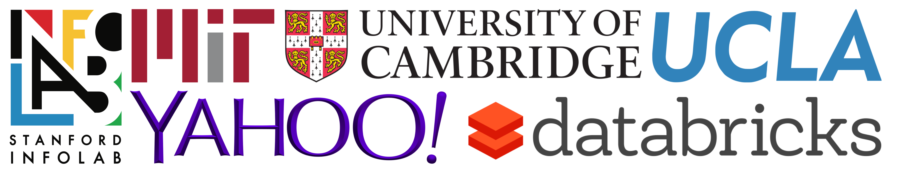
Presented at NIPS 2016
Motivation
- Decision trees work well for lots of ML problems
- Easy to debug; easy to tune, easy to understand
- As data grows in size $(n)$ and dimensionality $(p)$, two issues arise:
- Training sets can’t fit on a single machine—more machines required for training
- Deeper trees (e.g., $D \geq$ 10) are needed; greater depth $\rightarrow$ higher model accuracy
How do we train deep distributed decision trees?
Planet: The Classic Approach
- Partition training set by row
- Each worker computes sufficient statistics on subset of training data
- Since data partitioned by row, workers must compute statistics for all features

The Problem with Planet
- Communication cost between workers scales poorly as dimension $p$ and depth $D$ increase
- To limit communication, workers only consider $B$ splitting thresholds
- Instead of $n-1$, like in the serial algorithm
- $B \ll n$
- Optimal split may not always be found!

Excerpt from page 5 of the Planet
paper
org.apache.spark.ml.tree.impl.RandomForest
while (nodeStack.nonEmpty) {
val (nodesForGroup, treeToNodeToIndexInfo) =
RandomForest.selectNodesToSplit(nodeStack, maxMemoryUsage, metadata, rng)
// Only send trees to worker if they contain nodes being split this iteration.
val topNodesForGroup: Map[Int, LearningNode] =
nodesForGroup.keys.map(treeIdx => treeIdx -> topNodes(treeIdx)).toMap
RandomForest.findBestSplits(baggedInput, metadata, topNodesForGroup, nodesForGroup,
treeToNodeToIndexInfo, splits, nodeStack, timer, nodeIdCache)
}
The Problem with Planet
Three problems:
- Another hyperparameter: num. thresholds $B$
-
Important tradeoff:
-
finding optimal split
↕
runtime efficiency
-
finding optimal split
- Large $p$ and $D$ $\rightarrow$ poor runtime (even if you choose optimal $B$!)
Yggdrasil: The New Approach
- Partition training set by column
- Each worker computes sufficient statistics on all local features
- Master performs no aggregation; only responsible for picking globally optimal
- No $B$ parameter; no tradeoff for finding optimal split
- Equivalent to serial algorithm on a single machine

org.apache.spark.ml.tree.impl.Yggdrasil
def rowToColumnStoreDense(rowStore: RDD[Vector]): RDD[(Int, Array[Double])]
Yggdrasil in Action
- Partition features across workers
- Workers sort each feature by value
- Compute best split for each feature
- Pick best feature for each worker, send feature's split to master
- Master selects best global split among the candidates
Tale of the Tape: Planet vs. Yggdrasil
Tale of the Tape: Planet vs. Yggdrasil
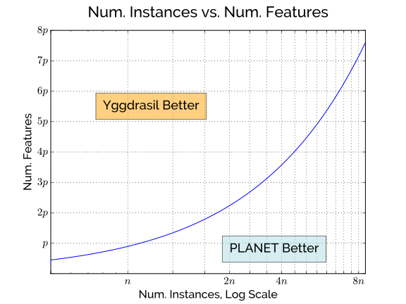
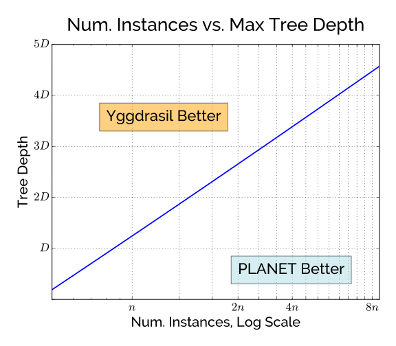
🔑 Yggdrasil is more efficient
than Planet for large $p$ and
$D$
But Column-Partitioning has been done before!
- Caragea et al., 2004; Ye et al., 2009; Svore and Burges, 2011
- If people have thought of this before...why is it not done in practice?
Ain't as easy as it looks
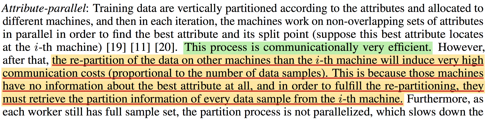
Excerpt from page 2 of Meng et al., 2016
Yggdrasil in Action
- Partition features across workers
- Workers sort each feature by value
- Compute best split for each feature
- Pick best feature for each worker, send feature's split + bit vector to master
- Master selects best global split among the candidates
- Master sends bit vector for best global split to each worker
- Worker sorts each feature by bit vector, then value
Itty-bitty Details
-
Bitvectors encode the partitioning of instances for each split
- 1 = left child, 0 = right child
- Lookups performed using label indices
- $O(Dn)$ term now isn't quite as scary
- Single sparse bitvector for all active leaves in the tree
org.apache.spark.ml.tree.impl.Yggdrasil
while (currentLevel < maxDepth) {
// Compute best split for each active node.
val bestSplitsAndGains: Array[(Option[Split], ImpurityStats)] =
computeBestSplits(partitionInfos, labelsBc, metadata)
// Aggregate paritioning bitvector and update partition sorting
val aggBitVector: RoaringBitmap = Yggdrasil.aggregateBitVector(
partitionInfos, bestSplitsAndGains.map(_._1), numRows)
partitionInfo = partitionInfos.map { partitionInfo =>
partitionInfo.update(bv, numNodeOffsets, labelsBc.value, metadata)
}
currentLevel += 1
}
Why sort?
- Must keep track of the split history for each feature
- New column per split $\rightarrow$ exponential memory footprint
- If we sort...
- Memory overhead is constant
- Computing best splits only requires a single scan over
- Sorting based on bit vector is $O(n)$! (Why?)
Exploiting ordering from previous iteration
activeNodes.iterator.foreach { nodeIdx =>
val from = nodeOffsets(nodeIdx)
val to = nodeOffsets(nodeIdx + 1)
var (leftInstanceIdx, rightInstanceIdx) = (from, from + numBitsNotSet)
var idx = from
while (idx < to) {
val indexForVal = col.indices(idx)
val bit = instanceBitVector.get(indexForVal)
if (bit) {
tempVals(rightInstanceIdx) = col.values(idx)
rightInstanceIdx += 1
} else {
tempVals(leftInstanceIdx) = col.values(idx)
leftInstanceIdx += 1
}
idx += 1
}
System.arraycopy(tempVals, from, col.values, from, to - from)
}
Additional Optimizations
Partitioning by column unlocks the potential for more optimizations:
- Sparse bitvectors
- Label encoding
- Columnar compression: Train on compressed features—without decompression!
Training on Compressed Features
-
Idea popularized by the databases community
- Sort column
- Compress column using run-length encoding (RLE), delta encoding, etc.
- That's it! Never have to fully materialize (i.e., decompress) the column again
- Works well for sparse features
Training on Compressed Features
- We already need to sort the features to perform greedy split-finding
- Feature values are visited in sequential order, so we never have to decompress!
- Downside: can't use our sorting trick anymore; need more space to track split history
- Upside: cache locality
Results: Real-world Datasets
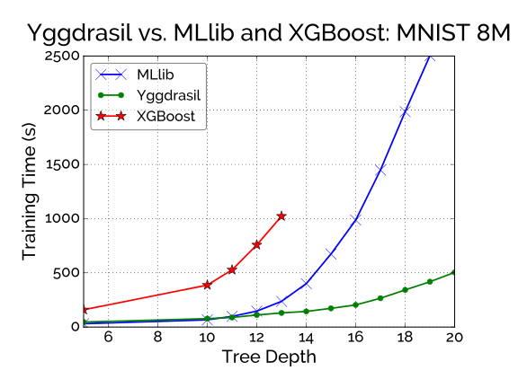
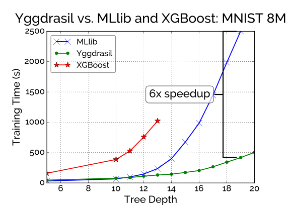
Parameters:
| # instances | 8.1 $\times$ 106 |
| # features | 784 |
| Size | 18.2 GB (sparse) |
| Task | classification |
Results: Real-world Datasets
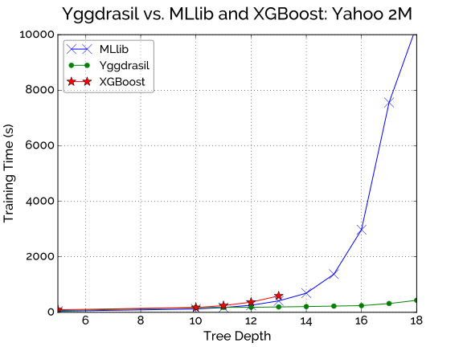
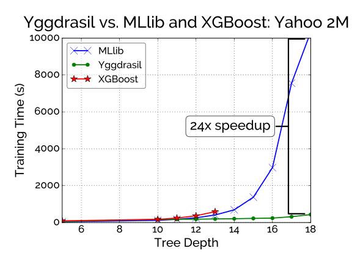
Parameters:
| # instances | 2 $\times$ 106 |
| # features | 3500 |
| Size | 52.2 GB (dense) |
| Task | regression |
Results: Scalability
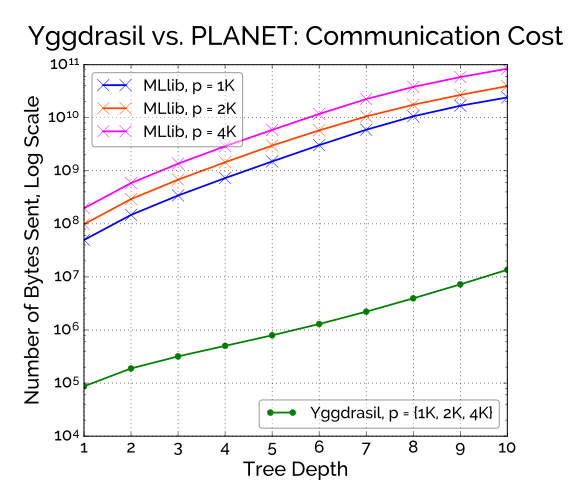
Parameters:
| # instances | 2 $\times$ 106 |
Results: Scalability
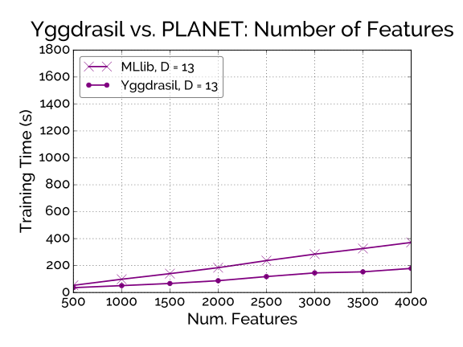
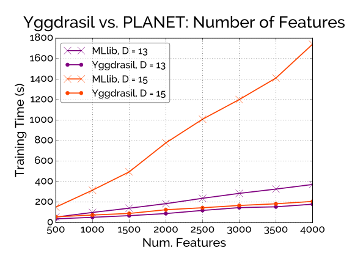
Parameters:
| # instances | 2 $\times$ 106 |
| Task | regression |
🔑 Empirical results match the
expected tradeoffs
Results: Optimizations
 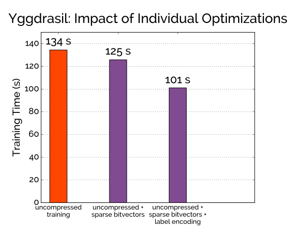
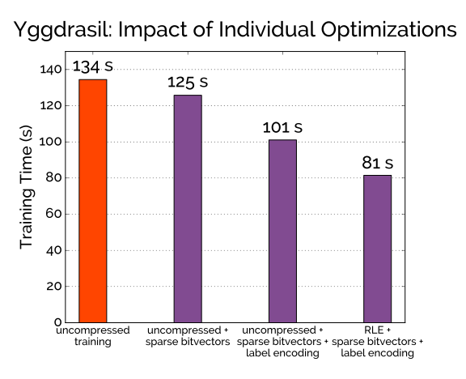
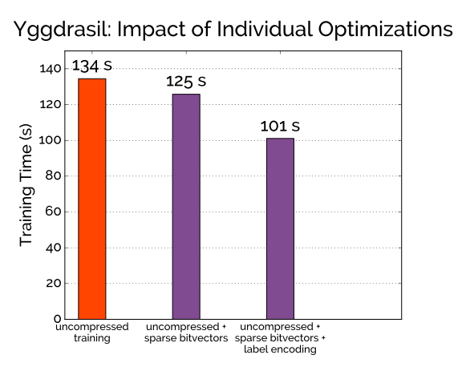
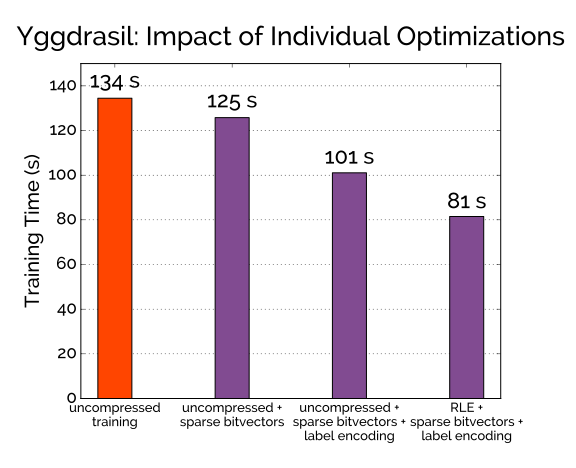
Parameters:
| Dataset | MNIST 8M |
| Depth | 10 |
🔑 Optimizations improve runtime, particularly for sparse datasets
Using Yggdrasil
-
Available as a Spark package:
https://bit.ly/ygg-spark - Compatible with Spark 1.6+
- Code already written in Spark MLlib? Not a problem!
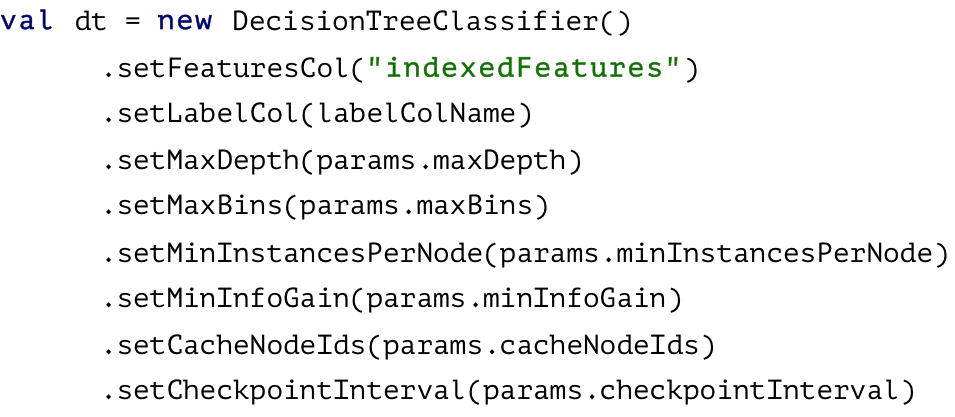
Future Work
- Merge Yggdrasil into Spark MLlib 2.1
- Add decision rule that automatically chooses best algorithm for you a priori
- Add support for approximate binning
- Single feature doesn't fit on a single node
Thanks! Questions?
Stay in touch:
feynman [at] gigster [dot] com